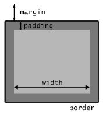

CSS
El modelo de caja
Es hora de conocer uno de los fundamentos más importantes del CSS: el modelo de caja (box model). Es muy fácil, pero entenderlo bien es vital para poder realizar una buena maquetación de la web.
¿Cómo es el modelo de caja?
En realidad, todos los elementos de una web (párrafos, enlaces, imágenes, tablas, etc.) son cajas rectangulares. Los navegadores sitúan estas cajas de la forma que nosotros les hayamos indicado
para maquetar la página.
Hay dos tipos de cajas: block e inline. Los elementos block rompen el flujo de maquetación. Esto es, aparecen solos, insertando “saltos de línea”. Los elementos inline siguen el flujo, y están contenidos dentro de elementos de bloque.
Por ejemplo, un párrafo sería un elemento block (no podemos tener un párrafo al lado del otro, sino que dos párrafos seguidos aparecerán uno abajo del otro. En cambio, un enlace es un elemento inline, ya que no “corta” el texto donde está metido.
Estas dos diferencias son importantes, pero hay que tener en mente que ambos tipos comparten el modelo de caja, que es el que aparece en la figura

Las propiedades más importantes de una caja son: width (ancho), height (alto), padding (relleno), border (borde) y margin (margen).
Ancho y alto
La propiedad width es un poco confusa, y durante mucho tiempo era horroroso trabajar con ella debido a que Ya-Sabes-Quién no la implementaba correctamente1. Afortunadamente, desde la versión 6 del IE, width funciona como debería, así que es un quebradero de cabeza menos.
A lo que íbamos, width representa el ancho de la caja. Pero es el ancho interior, es decir, si bordes, márgenes, ni padding.
Podemos indicar este ancho en medidas absolutas (normalmente píxeles) o relativas (normalmente %).
Aunque los elementos inline tienen width, si la modificamos con CSS no veremos ningún resultado visual. Esto es porque el ancho de estos elementos se establece automáticamente para que
se ajuste a las dimensiones del elemento inline. Por ejemplo, si tenemos un enlace que consiste en un texto de cinco caracteres, el ancho (width) de este elemento será lo que ocupen esos cinco
caracteres.
Sobre el alto de la caja, se controla con la propiedad height, y todo lo que hemos dicho antes sobre el ancho, también se aplica aquí.
Padding
Con padding establecemos la distancia de “relleno” entre el límite interior de la caja y el exterior (borde). Es una definición muy mala, pero se entiende a la perfección en el dibujito.
Si queremos poner un padding de 20 píxeles para toda la caja, lo haríamos así:
padding: 20px;Podemos establecer un padding distinto para cada lado, usando los sufijos -top (superior), -bottom (inferior), left (izquierda) y right (derecha):
padding-top: 10px;
padding-bottom: 5px;
padding-left: 30px;
padding-right: 20px;Podemos abreviar lo anterior en una sola línea, indicando primero el padding superior y luego siguiendo el orden de las agujas del reloj. Es decir, nos quedaría: arriba, derecha, abajo, izquierda.
El ejemplo anterior se acortaría así:
padding: 10px 20px 5px 30px;Otro atajo útil es especificar sólo dos medidas: una corresponderían al padding superior e inferior, y la otra al lateral. Si queremos que los paddings superior e inferior sean de 10 píxeles, y los laterales (izquierdo y derecho) de 20 píxeles, escribimos:
padding: 10px 20px;Bordes
Si queremos que nuestra caja tenga bordes, lo conseguimos con la propiedad border. Tiene la siguiente sintaxis:
border : width | style | color
Como habrás supuesto, width especifica el grosor del borde. Normalmente es una medida en píxeles, pero también podemos utilizar las palabras thin (fino), medium (normal) y thick (grueso).
Por supuesto, cómo de gordo es thick queda a interpretación del navegador.
En cuanto a style, es el tipo de borde. Hay bastantes, pero los más comunes son: solid (línea continua), dashed (línea discontinua), dotted (línea de puntos) y double (línea continua doble). Por último, color indica el color del borde.
Podemos escoger un tipo de borde diferente para cada lado con los sufijos -top, -bottom, -left y -right. Por ejemplo, para poner que algo tenga el borde inferior de 1 píxel a puntitos rojos:
border-bottom: 1px dotted #f00;Para eliminar el borde, simplemente ponemos que tiene de grosor 0 píxeles o que el estilo del borde es none. Esto es muy importante con las imágenes, ya que si tenemos una imagen enlazando a algo, los navegadores la ponen con un reborde muy feo. Así que esto se ha convertido ya en un fijo de las hojas de estilos:
img { border : none ; }
Márgenes
Los márgenes se controlan con la propiedad margin, y es la distancia entre el borde de la caja y los elementos que la rodean. En cuanto a la forma de usarla, es igual que con la propiedad padding, así que la forma de escribir y los atajos es exactamente la misma. Por ejemplo, si queremos márgenes superior e inferior de 20 píxeles, y laterales de 5 píxeles:
margin: 20px 5px;¡Truco del almendruco! Para centrar un elemento de bloque, podemos hacer uso de auto:
margin: 0px auto;Capas
Vamos a hablar de una etiqueta XHTML que nos quedó por ver y está estrechamente ligada con CSS: <div>. Esta etiqueta se encarga de crear una capa, que es un elemento de bloque que sirve de contenedor a otros elementos de bloque e inline. ¿Para qué nos sirven? Primero, para organizar semánticamente nuestra página. El atributo id tiene carga semántica, así que si queremos poner en la cabecera3 de nuestra web el título y el menú, haríamos esto:
<div id="header">
<h1>Mi blog</h1>
<ul id="menu">
<li><a href="..." title ="...">Principal </a></li>
<li><a href="..." title ="...">Acerca de </a></li>
<li><a href="..." title ="...">Enlaces </a></li>
</ul>
</div> El otro uso de las capas es el de maquetar. Por ejemplo, el layout típico de un blog tiene cuatro capas: la cabecera, la del contenido principal, la de la barra lateral4 y la del pie de página.
Mediante CSS, podemos controlar la disposición de estas capas, y así conseguir el diseño que queramos.
Floats
Los floats son probablemente una de las cosas que más cuesta dominar. En inglés los califican como “tricky”. Yo los califico como “pequeños cabroncetes”.
Lo que hacen los floats es alterar el flujo de la página, “incrustando” en él un elemento de bloque. El ejemplo más típico es el de si queremos poner una imagen acompañando a un texto, y que el texto “envuelva” a la imagen. Esto lo conseguimos creando una clase como la siguiente:
.izquierda {
float: left;
}Podemos indicar tanto left (izquierda) como right (derecha). ¿Fácil, rápido y para toda la familia? No. Después de un float, suelen ocurrir sucesos paranormales5. La mayoría de ellos suelen desaparecer mediante la propiedad clear, que se encarga de “anular” los floats. Los valores que admiten son left, right y both
(que significa “ambos”).
Volviendo al ejemplo de layouts de blogs, lo normal es poner el contenido y la barra lateral mediante floats. Lo que suele pasar es que una de estas dos columnas pasa por encima del pie de página, en lugar de quedar el pie al final de todo. Esto se suele arreglar así:
#footer {
clear: both;
}